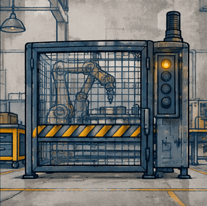
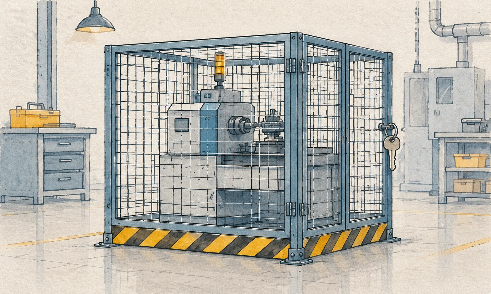
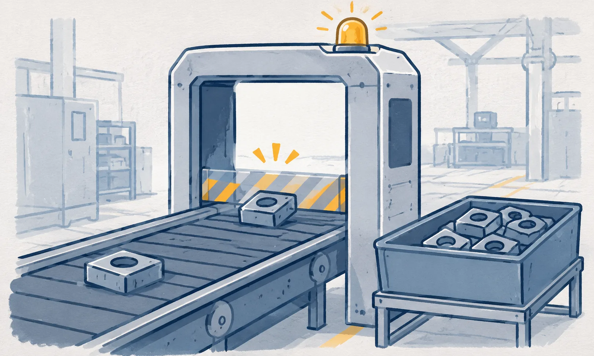

01 笼子的哲学 —— 先承认边界，再谈设防
02 五条硬上限 —— 拒绝发生在进程出生之前
03 import 闸门 —— 十二个进不了门的名字
04 内核围栏 —— 71 行 ctypes 圈住整棵进程树
05 无形之门 —— 环境变量、stdin 与 -I
06 产物回传与清场 —— 图怎么回到模型眼前
附 —— 起笼前检查单：如果只带走十二句
安全工程里最贵的失误，不是防线太薄，是防线撒谎。这台沙箱第一句自述是认输——然后每一行代码都在它承认的边界内把防守做到位。
标本由三个模块组成，总共 471 行：python_sandbox.py 217 行、windows_job.py 71 行、workspace_files.py 183 行。三个文件的 docstring 是同一个立场的三次重申。沙箱runner 文件头（原样）：
"""Trusted-code Python runner with time/output limits and Windows job limits. The temporary working directory and import checks are not filesystem or network isolation. Do not expose this runner to untrusted users or untrusted code."""
翻译过来：这是给「可信代码」的 runner，不是关押「恶意代码」的监狱；临时目录和 import 检查不构成文件系统或网络隔离；别把它暴露给不可信的用户或代码。工具的 META 元数据里又把这句话压成一行随 schema 下发：「Trusted-code runner: timeout, bounded output, and Windows job memory/process-tree limits. Not filesystem or network isolation.」——也就是说，模型每次拿到这个工具的菜单时，都读到同一份边界声明。文件门卫 workspace_files.py 同款：「…not an isolation boundary. Paths must stay inside the user's workspace root.」
经典追问：为什么不干脆做成真隔离，还要把「不隔离」写在脸上？三个理由。①威胁模型不同——这台沙箱的假想敌是「可信代码出事故」：死循环、内存爆炸、刷屏输出、误删工作区文件；不是「恶意攻击者蓄意逃逸」。防事故靠上限和围栏就够了，防蓄意攻击要上容器或虚拟机，那是另一档成本。②功能死刑——真隔离意味着断网断盘，而标本的核心用途是 matplotlib 画图落盘再回传，隔离了，用途也没了。③诚实是合同——把「不防什么」写进 docstring 和 schema，调用方（模型和人）才不会高估它：有人想在上面跑爬虫时，第一句话就把路堵死。声称过大的安全边界，比没有边界更危险——因为用户会基于你的声称做决策。

# 点上面任意一行 —— 给出判定与源码依据
笼子最省钱的抓法，是让危险根本没机会出生。五条上限不是五个参数，是五个层级——有的挡在闸前，有的圈在笼里，有的收在出口。
| 上限 | 值 | 层级 | 真实测试 |
|---|---|---|---|
| 代码长度 | ≤ 8,000 字符 | 闸前拒（Popen 之前） | "# pad\n" * 3000 → exceeds |
| 超时 | 默认 20s · 上限 60s | 笼内限（0.1s 步进盯梢） | time.sleep(30) + timeout=1 → killed |
| 输出 | stdout/stderr 各截 6,000 字符 | 笼内限（reader 线程边收边剪） | print('x' * 2000000) → 恰好 6000 |
| 内存 | Job 合计 512MB | 内核围栏（第四章细拆） | bytearray(600 * 1024 * 1024) → MemoryError |
| 产物 | 4 种图片后缀 · ≤ 2MB | 出口查（base64 回传前） | 手写 PNG 被收，超大的被跳过 |
这张表的关键在「层级」列：闸前拒的检查发生在 subprocess.Popen 之前——超长代码和被禁模块根本轮不到出生，返回错误只要几微秒；笼内限的机制活在整个执行期——主循环每 0.1 秒醒一次看deadline，两条 reader 线程把 stdout/stderr 边收边剪（每块 4096 字节，剪到 6000 的四倍余量封顶，解码后再截 6000——四倍是给多字节中文留的余量）；出口查只发生在进程死后——产物收集器扫工作目录，白名单外的文件连看都不看。
超时的处理尤其讲礼数：超时不是异常，是结果的一个字段——timed_out: true + 一句人话「Execution timed out after {n}s and was killed.」放在 stderr 里回来，模型能读懂发生了什么。而且主循环每 0.1 秒都会先问一句 should_cancel()——人喊停优先于超时，取消永远比杀进程温柔。
经典追问：为什么代码长度限制是 8,000 字符这么小的数？模型写个正经脚本很容易超。因为这是工具的定位决定的：沙箱的 schema description 写明用途是「do math, data wrangling, or render charts」——算个数、洗个数据、画张图，都是短平快的活。8,000 字符 ≈ 二三百行，够任何一段分析脚本；真要写大程序，那是编辑器和终端的活，不该塞进一个工具调用。上限的另一个作用是限定爆炸半径：一段 8,000 字符的代码再离谱，能在 60 秒内造成的事故也是可估计的——上限不是防高手，是把最坏情况变成可预算的。
# 点一段代码 —— 看它在哪一层停住
在进程出生之前，代码还要过第二道闸：一份 12 个名字的黑名单，一条 30 个字符的正则。这是整个沙箱里最「土」的部件，也是最值得细看的部件。
被禁的 12 个模块（BLOCKED_MODULES 原样）分三伙：网络——socket、urllib、requests、http、ftplib、telnetlib；进程与系统——subprocess、multiprocessing、ctypes、signal、shutil；异步——asyncio（asyncio 能用纯 Python 协程绕出同步死循环的监控，还能拼装网络客户端）。拦它们的正则只有一行（原样）：
r"(?:^|[;\s(])(?:import|from)\s+(" + "|".join(BLOCKED_MODULES) + r")(?:[\s.,;(]|$)" # 两端的定界符是精髓： # 前缀 (?:^|[;\s(]) —— import 前只能是行首 / 分号 / 空白 / 左括号 # 后缀 (?:[\s.,;(]|$) —— 模块名后必须是空白 / 点 / 逗号 / 分号 / 左括号 / 行尾
后缀定界符挡住的是「伪前缀」：import socketing 里 import 的模块叫 socketing，不在黑名单里，不该拦——正则因为有 [\s.,;(]|$ 这个尾巴，不会把 socketing 误判成 socket。前缀定界符挡住的是「伪语句」：myimport socket 里的 import 是个更长的名字的一部分。而注释里的 import 会被拦——# import socket 里 import 前面是空格，正则照样命中。这是一次明码标价的宁可错杀：被注释掉的 import 也过不了闸。误拦一段注释的代价是模型改一行代码重交，漏放一个真 socket 的代价是笼子破洞——这笔账好算。
经典追问：import 黑名单一眼就能绕（exec、__import__、字符串拼接），为什么还敢用它当闸门？因为这道闸的职责被故意限定成了「过滤网」，不是「保险箱」。三个证据：① docstring 说的清楚——import checks are not isolation；② 绕过它需要故意——__import__('socket') 是蓄意攻击行为，而本沙箱的威胁模型（第一章）明确不接这个活，「Do not expose this runner to untrusted code」；③ 过滤网拦的是顺带的危险：模型想「帮用户下个文件」顺手 import urllib，这种事故在闸前就死了。真正的底裤是后两层：就算绕过了 import 闸，进程还困在 Job 里、60 秒必死、内存封顶——每层防线的存在不是为了单独挡住所有攻击，是为了把「防线被穿透」变成「还有下一层」。

# 点病例 —— 正则判定与源码同款（JS 移植，模式串逐字一致）
前两道闸挡的是「代码文本」，这一章挡的是「活着的进程」。Windows Job Object 是内核级的会计制度：进程生几个孩子都算你的账，Closing 即全家处决。
整个围栏只有 71 行。核心动作是四次内核调用：CreateJobObjectW 建笼 → SetInformationJobObject 立规矩 → AssignProcessToJobObject 把进程塞进笼 → TerminateJobObject 全家处决。立规矩那一步设了两个旗标（源码原样）：
limits = ExtendedLimits() # Kill on close + aggregate job memory. Children inherit job membership. limits.BasicLimitInformation.LimitFlags = 0x2000 | 0x0200 limits.JobMemoryLimit = memory_bytes # 512MB，全笼合计
0x2000 是 JOB_OBJECT_LIMIT_KILL_ON_JOB_CLOSE：笼子的句柄一关，笼里所有进程（无论谁生的）立刻终止——这就是为什么沙箱的 finally 里无条件 job.close()，超时、异常、取消，任何出口都通向全家处决。0x0200 是 JOB_OBJECT_LIMIT_JOB_MEMORY：512MB 不是单进程的限额，是全笼合计的提交内存——主进程吃 100MB、两个孩子各吃 250MB，第四次分配就会收到 MemoryError。注释里还有半句关键承诺：Children inherit job membership——孩子生下来就在笼里，这是「进程树围栏」四个字的内核依据。
时序上还有一个容易忽略的讲究：Job 在 Popen 之前创建，attach 在代码送达之前完成。源码里有行注释专门点破：「User code is delivered only after the process has joined the job.」——不存在「代码先跑了几毫秒、围栏后到」的窗口期。测试代码甚至验证了反面：test_job_setup_failure_does_not_run_code 把 attach mock 成抛错，断言标记文件从未被创建——围栏立不起来，宁可空手而归，绝不让代码裸跑。
经典追问：process.kill() 一行就能杀进程，为什么非要引内核的 Job Object？因为 kill 只杀一个进程，而代码会生孩子。import 闸拦得住「顺手的」subprocess，拦不住所有造进程的手段——测试正是这么验证的：绕过 handle() 的 import 检查，直接把一段 import subprocess 的代码喂给笼内进程，让它真的生出一个 sleep(30) 的孩子。Windows 上孤儿进程不随父亲死亡，会在后台活到天荒地老。Job Object 的会计是内核记账：AssignProcessToJobObject 之后，无论进程怎么生孩子，孩子自动继承笼籍（测试 test_closing_job_terminates_descendant 真的让笼里进程 subprocess 生了个 sleep(30) 的孩子，然后 job.close()，再用 OpenProcess + WaitForSingleObject 确认孩子也死了）。POSIX 那侧的对应物是 start_new_session=True + os.killpg 杀整组——但 killpg 只管一组，Job 是持续账本。一次性击杀和持续监管是两种能力：前者是行刑，后者是坐牢。
# 先点「笼内进程 + 生两个孩子」
笼子最容易被忽视的漏洞不在代码里，在代码周围：环境变量、启动参数、当前目录——这些「不是代码的东西」往往比代码更机密。
沙箱进程的环境变量不是继承来的，是逐个挑出来的（源码原样）：
env = {key: value for key, value in os.environ.items()
if key.upper() in {"SYSTEMROOT", "WINDIR", "PATH", "TEMP", "TMP"}}
env.update({"MPLCONFIGDIR": workdir, "HOME": workdir, "USERPROFILE": workdir})
一个 Web 工作台的进程环境里躺着什么？数据库连接串、各种 API key、部署令牌——黑名单思路在这里必败：你永远列不全「危险的名字」，而白名单只有 5 个键，谁也塞不进来。测试直接把这件事钉死：test_parent_secrets_are_not_inherited 往父进程环境塞一个 APP_TEST_SECRET，断言笼内 os.getenv 拿到的是 'absent'。白名单之后的三行 update 是温柔的补偿：HOME、USERPROFILE、MPLCONFIGDIR 全部重定向进笼内临时目录——matplotlib 要写配置、库要找 home，都让它们写进即将被 rmtree 的地方。
启动命令只有一句 bootstrap（原样）：python -I -u -c "import sys; exec(compile(sys.stdin.buffer.read().decode('utf-8'), '<tool>', 'exec'))"。两个细节值得停。其一，用户代码不在命令行里——它从 stdin 管道灌进去。命令行是公开的：任务管理器、进程列表、崩溃报告全都记录完整 argv，代码若走 argv，任何能看到进程列表的人（和任何崩溃日志）都看得到全文；而且 Windows 命令行长度上限 32,767 字符，8,000 字符的代码配上引号转义随时炸。stdin 只有管道两端知道。其二，时序：stdin 的写入发生在 job.attach() 之后——代码永远是在围栏立好之后才被递进去的，第一章说的「不隔离」，在这条时间线上被打了一次补丁。
还有那个不起眼的 -I：CPython 的隔离模式，忽略 PYTHONPATH、不加载用户 site-packages、不执行环境里的启动钩子。环境变量已经剥干净了，-I 再把解释器自身的「环境依赖」也剥一层——两道门对着同一个方向，各自独立，谁失守另一个还在。
经典追问：环境变量白名单为什么留 PATH 这种危险项，不留 PYTHONPATH？留 PATH 是因为生存需要：Windows 上 SYSTEMROOT/WINDIR 让 Python 能加载系统 DLL，PATH 让 matplotlib 的原生依赖找得到彼此——不留这些，进程第一步就爬不起来。不留 PYTHONPATH 是因为它是纯增项：PATH 决定「去哪找系统」，PYTHONPATH 决定「额外塞进 import 搜索路径的私货」——父进程的 PYTHONPATH 若跟着进来，笼内代码就能 import 到父环境里任何目录下的模块，白名单就白做了。白名单的每一条留项，都要能回答「它是不是活命必需」；回答不了的，一律不带。
代码在笼里画了张图，模型看不见——图在文件系统里，模型只有文本。产物闸是笼子唯一的一条「出口通道」，它的宽度被精确控制。
进程退出后，收集器扫一遍笼内临时目录（ARTIFACT_SUFFIXES 原样：{".png", ".jpg", ".jpeg", ".svg"}）：后缀不在名单里的不看，超过 2MB 的跳过，入选的读成字节、base64 编码，塞进返回值的 artifacts 数组，附上 media_type。schema 的 description 早把这条通路告诉了模型：「Charts: matplotlib with Agg backend, save as .png in the working directory」——模型点单时就知道图要存成 .png 才回得来。测试把整条链路验证了一遍：test_artifact_png_is_collected_as_base64 里那段代码连 matplotlib 都没用，直接用 struct + zlib 手写了一个 1×1 像素的 PNG 二进制，然后断言 base64 解回第一个字节是 \x89PNG——产物内容没在编码里损坏。
回传的另一半是 stdout 的呈现。标本的工具循环里有句很直白的注释（tool_loop.py 原样）：「python_sandbox：预览直接给 stdout，别甩一坨 JSON」——沙箱的返回结构里有 stdout/stderr/returncode/duration_ms/timed_out 五个字段，给模型看的时候不用 JSON 包装，直接给文本。一个新注册的工具名 python_sandbox 只在受控模式绑定下启用（registry.py：(binding 且 name in ("python_sandbox", "workspace_files"))——笼子本身就是受控模式的门禁装备，不受控的会话连笼子都摸不到。
handle 的最后一段是 finally 块，四件事没有一个可跳过：job.close()（全家处决）、join 两条 reader 线程（5 秒预算）、关闭三根管道、shutil.rmtree(workdir) 抹掉整个临时目录。超时、异常、取消、正常退出——四条路径全部汇进这里。笼子用完即拆，临时目录不留尸。与之一致的是测试目录的命名纪律：所有笼子都住在 %TEMP%\ai-skill-sandbox\run-xxxx 下——一段前缀让全世界的笼子可辨识、可批量清理。
经典追问：产物闸为什么只放行图片，不放行 .csv、.json、.log？因为出口通道的宽度由「模型的感知方式」决定，不是由文件的类型决定。图片是唯一必须走 base64 塞进对话模型才能「看见」的产物——数据表格模型可以让你直接用 stdout 打印前几十行（文本通道天然在），大文件可以分块打印摘要。凡是能用 stdout 走的，都该走 stdout——那条通道有 6,000 字符上限兜底；而 artifacts 是无尺寸语义的 raw 通道，4 后缀 + 2MB 就是把这条「旁路」压到最窄。出口越窄，笼子越可信。
# 跑 test_artifact_png_is_collected_as_base64 同款代码（struct+zlib 手写 1×1 PNG）
workspace_files.py（183 行）管的是「摸文件」——同样的先承认（docstring：not an isolation boundary）、同样的闸前拒。路径解析只有三行（原样）：root.resolve() → (root / relative).resolve() → 「candidate != root and root not in candidate.parents」即抛「路径越出工作区范围。」——../../ 攻击在 resolve 摊平之后当场现形。配套限额同款分层：读 40,000 字符截断、写 60,000 字符拒收、列表 200 条且滤掉 .git/node_modules/__pycache__。受控模式下写操作还要再过一册讲过的审批闸门（120 秒支票），批准才落 applied、随时可 409 回滚。贴在手边的那一页。每句都是前面六章的浓缩，展开版见各章。
import socketing 不是 socket；注释里的 import 会被拦，误拦一行重试，漏放一个就是破洞。笼子的全部心思可以压成四件实物：一纸声明（不隔离，写在你读得到的地方）、两道闸（长度和 import，进程出生之前落锤）、一圈围栏（Job Object，内核记账、孩子连坐）、一条窄门（产物回传，四种图片两兆为限）。写作当晚把标本的 17 个测试从头跑了一遍，最喜欢的还是那个手写 PNG 的：一段不用任何库的 struct+zlib 代码在笼里画出一张 1×1 的图，base64 出笼，解回第一个字节还是 \x89PNG——最窄的门，运出来的东西完好无损，这就是一台沙箱能给出的最体面的成绩单。